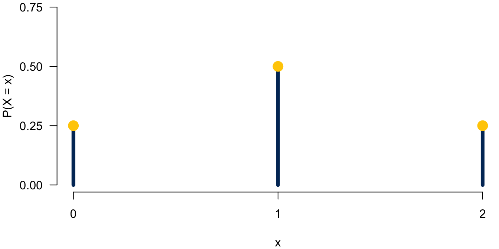
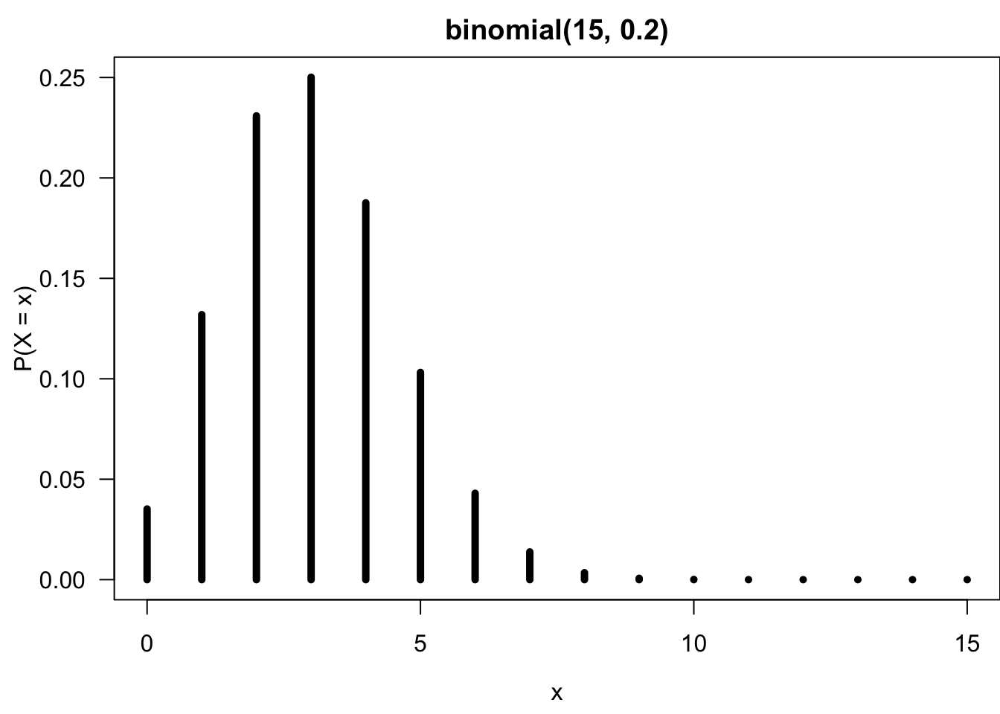
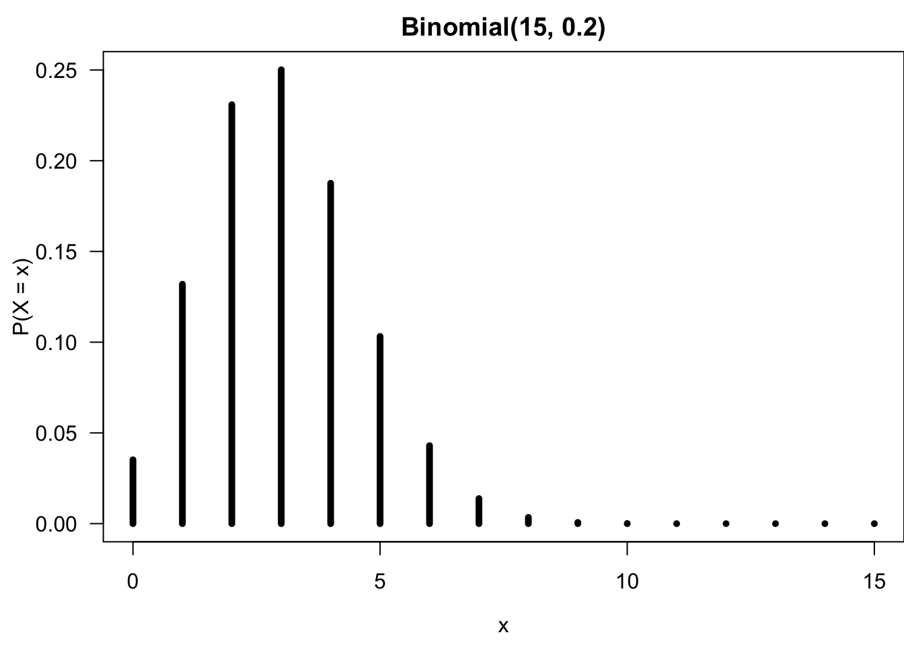
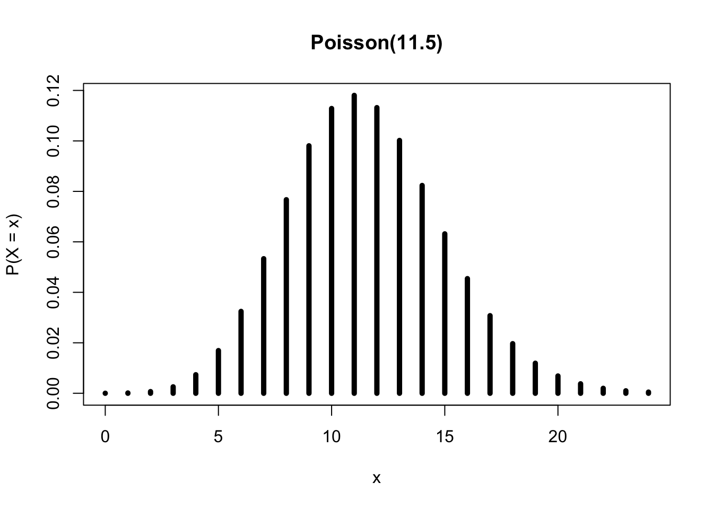

9 Discrete Probability Distributions
This book serves as a main reference book for my MATH 4720 Statistical Methods and MATH 4740 Biostatistical Methods at Marquette University. Some topics can also be discussed in an introductory data science course. You’ll learn basic probability and statistical concepts as well as data analysis techniques such as linear regression using R computing software.
9.1 Introduction
- The probability (mass) function of a discrete random variable (rv) \(X\) is a function \(P(X = x)\) (or \(p(x)\)) that assigns a probability to every possible number \(x\).
- The probability distribution for a discrete r.v. \(X\) displays its probability function.
- The display can be a table, graph or mathematical formula of \(P(X = x)\).
Example:🪙🪙 Toss a fair coin twice independently where \(X\) is the number of heads.
- The probability distribution of \(X\) as a table is
| x | 0 | 1 | 2 |
| P(X = x) | 0.25 | 0.5 | 0.25 |

- \(0 \le P(X = x) \le 1\) for every value \(x\) of \(X\).
- \(x = 0, 1, 2\)
- \(\sum_{x}P(X=x) = 1\), where \(x\) assumes all possible values.
- \(P(X=0) + P(X = 1) + P(X = 2) = 1\)
- The probabilities for a discrete r.v. are additive because \(\{X = a\}\) and \(\{X = b\}\) are disjoint for any possible values \(a \ne b\).
- \(P(X = 1 \text{ or } 2) = P(\{X = 1\} \cup \{X = 2\}) = P(X = 1) + P(X = 2)\).
Mean
- Suppose \(X\) takes values \(x_1, \dots, x_k\) with probabilities \(P(X = x_1), \dots, P(X = x_k)\).
- The mean or expected value of \(X\) is the sum of each outcome multiplied by its corresponding probability: \[E(X) := x_1 \times P(X = x_1) + \dots + x_k \times P(X = x_k) = \sum_{i=1}^kx_iP(X=x_i)\]
- The Greek letter \(\mu\) may also be used in place of the notation \(E(X)\).
- The mean of a discrete random variable \(X\) is a weighted average.
- The possible values, \(x\), are weighted by their corresponding probability.
Variance
- Suppose \(X\) takes values \(x_1, \dots , x_k\) with probabilities \(P(X = x_1), \dots, P(X = x_k)\) and expected value \(\mu = E(X)\).
- The variance of \(X\), denoted by \(Var(X)\) or \(\sigma^2\), is \[\small Var(X) := (x_1 - \mu)^2 \times P(X = x_1) + \dots + (x_k - \mu)^2 \times P(X = x_k) = \sum_{i=1}^k(x_i - \mu)^2P(X=x_i)\]
- The standard deviation of \(X\), \(\sigma\), is the square root of the variance.
- The variance of a discrete random variable \(X\) is also weighted.
- It is the sum of squared deviation from the mean weighted by probability values.
9.2 Binomial Distribution
Binomial Experiment and Random Variable
- A binomial experiment is one that has the following properties:
- 👉 The experiment consists of a fixed number of identical trials \(n\).
- 👉 Each trial results in one of exactly two outcomes (success (S) and failure (F)).
- 👉 Trials are independent, meaning that the outcome of one trial does not affect the outcome of any other trial.
- 👉 The probability of success is constant for all trials.
- If \(X\) is defined as the number of successes observed in \(n\) trials , then \(X\) is a binomial random variable.
- The word success just means one of the two outcomes and does not necessarily mean something good.
- 😲 We can define Drug abuse as success and No drug abuse as failure.
Distribution
- The probability function \(P(X = x)\) of a binomial r.v. \(X\) can be fully determined by
- the number of trials, \(n\)
- probability of success, \(\pi\)
- Different \((n, \pi)\) pairs generate different binomial probability distributions.
- \(X\) is said to follow a binomial distribution with parameters \(n\) and \(\pi\), written as \(\color{blue}{X \sim binomial(n, \pi)}\).
- The binomial probability function is \[ \color{blue}{P(X = x \mid n, \pi) = \frac{n!}{x!(n-x)!}\pi^x(1-\pi)^{n-x}, \quad x = 0, 1, 2, \dots, n}\]
- This distribution has a mean \(\mu = E(X) = n\pi\) and variance \(\sigma^2 = Var(X) = n\pi(1-\pi)\).
Example
- Assume that 20% of all drivers have a blood alcohol level above the legal limit. For a random sample of 15 vehicles, compute the probability that:
- Exactly 6 of the 15 drivers will exceed the legal limit.
- Of the 15 drivers, 6 or more will exceed the legal limit.
- Suppose it’s a binomial experiment with \(n = 15\) and \(\pi = 0.2\).
- Let \(X\) be the number of drivers exceeding limit.
- \(X \sim binomial(15, 0.2)\).
\[ \color{blue}{P(X = x \mid n=15, \pi=0.2) = \frac{15!}{x!(15-x)!}(0.2)^x(1-0.2)^{15-x}, \quad x = 0, 1, 2, \dots, n}\]

- \(\small P(X = 6) = \frac{n!}{x!(n-x)!}\pi^x(1-\pi)^{n-x} = \frac{15!}{6!(15-6)!}(0.2)^6(1-0.2)^{15-6} = 0.043\)
- \(\small P(X \ge 6) = p(6) + \dots + p(15) = 1 - P(X \le 5) = 1 - (p(0) + p(1) + \dots + p(5)) = 0.0611\)
Never do this by hand. We can compute them using R!
Computation in R
- With
sizebeing the number of trials andprobbeing the probability of success,- use
dbinom(x, size, prob)to compute \(P(X = x)\) - use
pbinom(q, size, prob)to compute \(P(X \le q)\) - use
pbinom(q, size, prob, lower.tail = FALSE)to compute \(P(X > q)\)
- use
## 1. P(X = 6)
dbinom(x = 6, size = 15, prob = 0.2) [1] 0.04299262## 2. P(X >= 6) = 1 - P(X <= 5)
1 - pbinom(q = 5, size = 15, prob = 0.2) [1] 0.06105143## 2. P(X >= 6) = P(X > 5)
pbinom(q = 5, size = 15, prob = 0.2,
lower.tail = FALSE) [1] 0.06105143- Below is an example of how to generate the binomial probability distribution as a graph.
plot(x = 0:15, y = dbinom(0:15, size = 15, prob = 0.2),
type = 'h', xlab = "x", ylab = "P(X = x)",
lwd = 5, main = "Binomial(15, 0.2)")
9.3 Poisson Distribution
Poisson Random Variables
- If we want to count the number of occurrences of some event over a unit of time or space (region) and observe its associated probability, we could consider the Poisson distribution.
- For example,
- The number of COVID patients arriving at ICU in one hour
- The number of Marquette students logging onto D2L in one day
- The number of dandelions per square meter on Marquette’s campus
- Let \(X\) be a Poisson random variable. Then \(\color{blue}{X \sim Poisson(\lambda)}\), where \(\lambda\) is the parameter representing the mean number of occurrences of the event in the interval. \[\color{blue}{P(X = x \mid \lambda) = \frac{\lambda^x e^{-\lambda}}{x!}, \quad x = 0, 1, 2, \dots}\]
- Both the mean and the variance are equal to \(\lambda\).
Assumptions and Properties of Poisson Variables
- 👉 Events occur one at a time; two or more events do not occur at the same time or in the same space or spot.
- 👉 The occurrence of an event in a given period of time or region of space is independent of the occurrence of the event in a nonoverlapping time period or region of space.
- 👉 \(\lambda\) is constant for any period or region.
Example
- Last year there were 4200 births at the University of Wisconsin Hospital. Assume \(X\) be the number of births in a given day at the center, and \(X \sim Poisson(\lambda)\). Find
- \(\lambda\), the mean number of births per day.
- the probability that on a randomly selected day, there are exactly 10 births.
- \(P(X > 10)\)?
\(\small \lambda = \frac{\text{Number of birth in a year}}{\text{Number of days}} = \frac{4200}{365} = 11.5\)
\(\small P(X = 10 \mid \lambda = 11.5) = \frac{\lambda^x e^{-\lambda}}{x!} = \frac{11.5^{10} e^{-11.5}}{10!} = 0.113\)
\(\small P(X > 10) = p(11) + p(12) + \dots + p(20) + \dots\) (No end!) \(\small P(X > 10) = 1 - P(X \le 10) = 1 - (p(1) + p(2) + \dots + p(10))\).
Computation in R
- With
lambdabeing the mean of Poisson distribution,- use
dpois(x, lambda)to compute \(P(X = x)\) - use
ppois(q, lambda)to compute \(P(X \le q)\) - use
ppois(q, lambda, lower.tail = FALSE)to compute \(P(X > q)\)
- use
(lam <- 4200 / 365)[1] 11.50685## P(X = 10)
dpois(x = 10, lambda = lam) [1] 0.112834## P(X > 10) = 1 - P(X <= 10)
1 - ppois(q = 10, lambda = lam) [1] 0.5990436## P(X > 10)
ppois(q = 10, lambda = lam,
lower.tail = FALSE) [1] 0.5990436- Below is an example of how to generate the Poisson probability distribution as a graph.
plot(0:24, dpois(0:24, lambda = lam), type = 'h', lwd = 5,
ylab = "P(X = x)", xlab = "x", main = "Poisson(11.5)")
- \(X\) has no upper limit; the graph is truncated at \(x = 24\).
9.4 Exercises
- Data collected by the Substance Abuse and Mental Health Services Administration (SAMSHA) suggests that 65% of 18-20 year olds consumed alcoholic beverages in any given year.
- Suppose a random sample of twelve 18-20 year olds is taken. When does it make sense to use binomial distribution for calculating the probability that exactly five consumed alcoholic beverages?
- What is the probability that exactly five out of twelve 18-20 year olds have consumed an alcoholic beverage?
- What is the probability that at most 3 out of 7 randomly sampled 18-20 year olds have consumed alcoholic beverages?
- A Dunkin’ Donuts in Milwaukee serves an average of 65 customers per hour during the morning rush.
- Which distribution have we studied that is most appropriate for calculating the probability of a given number of customers arriving within one hour during this time of day?
- What are the mean and the standard deviation of the number of customers this Starbucks serves in one hour during this time of day?
- Calculate the probability that this Dunkin’ Donuts serves 55 customers in one hour during this time of day.